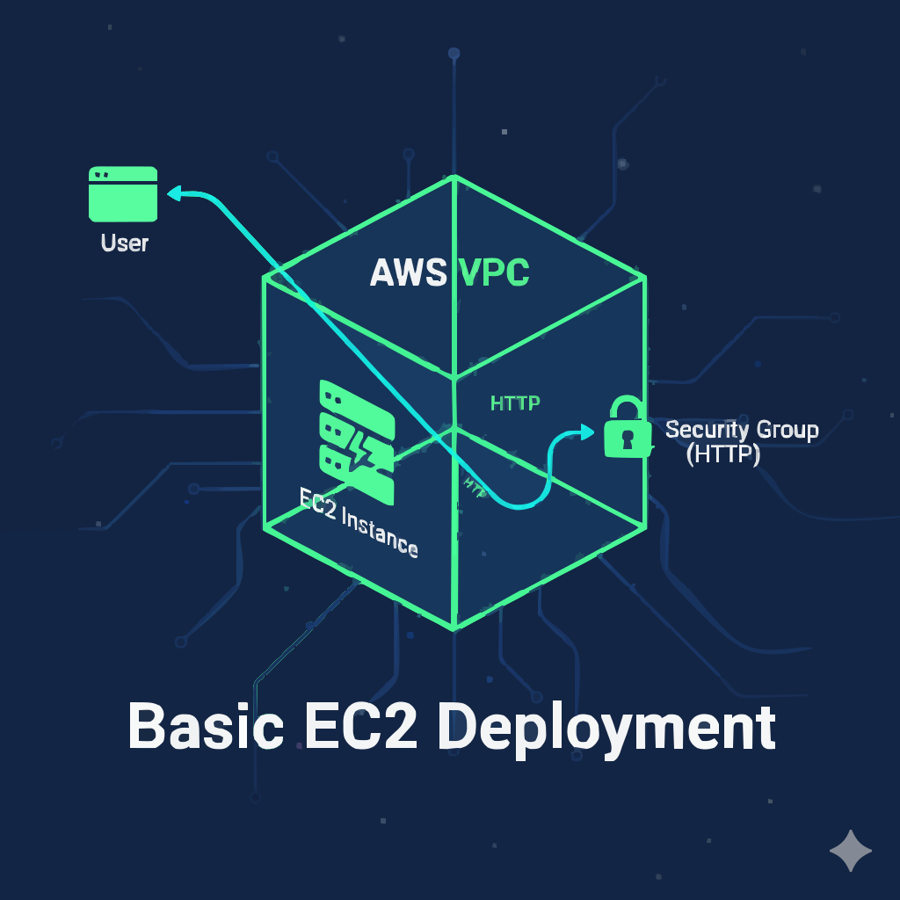
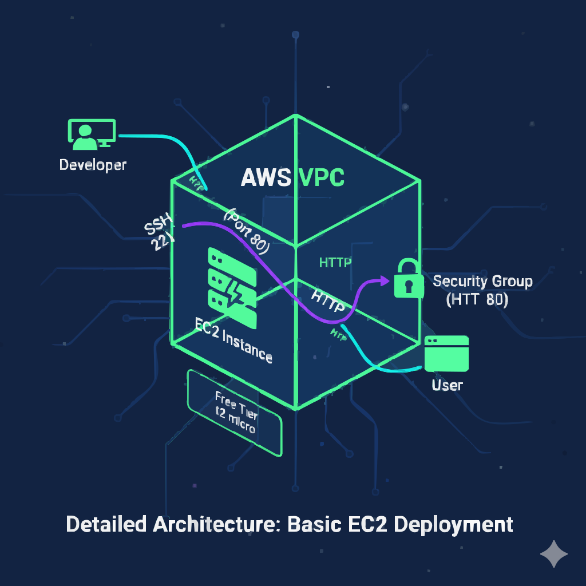
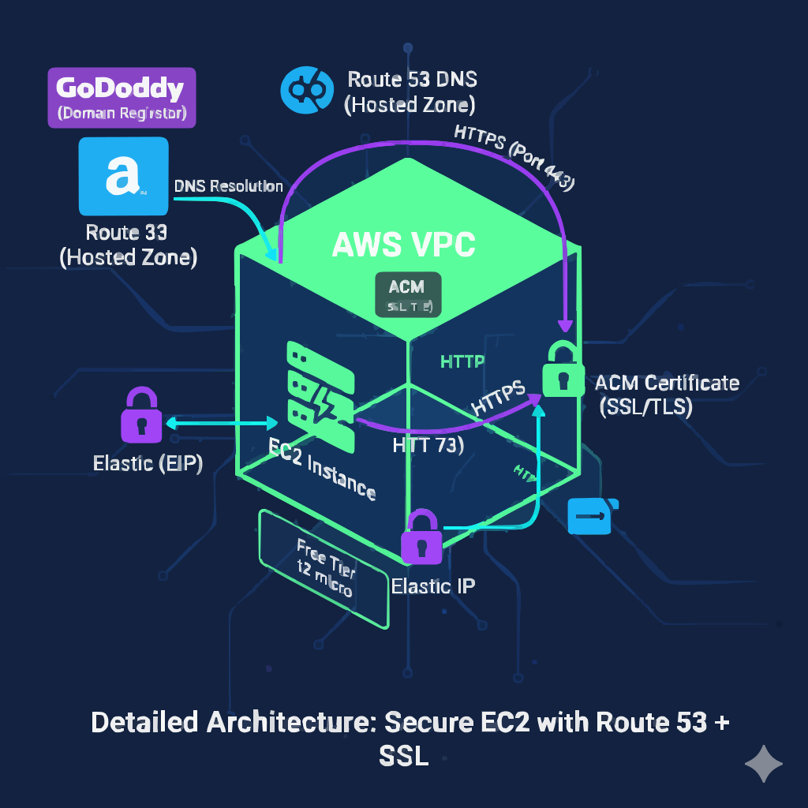
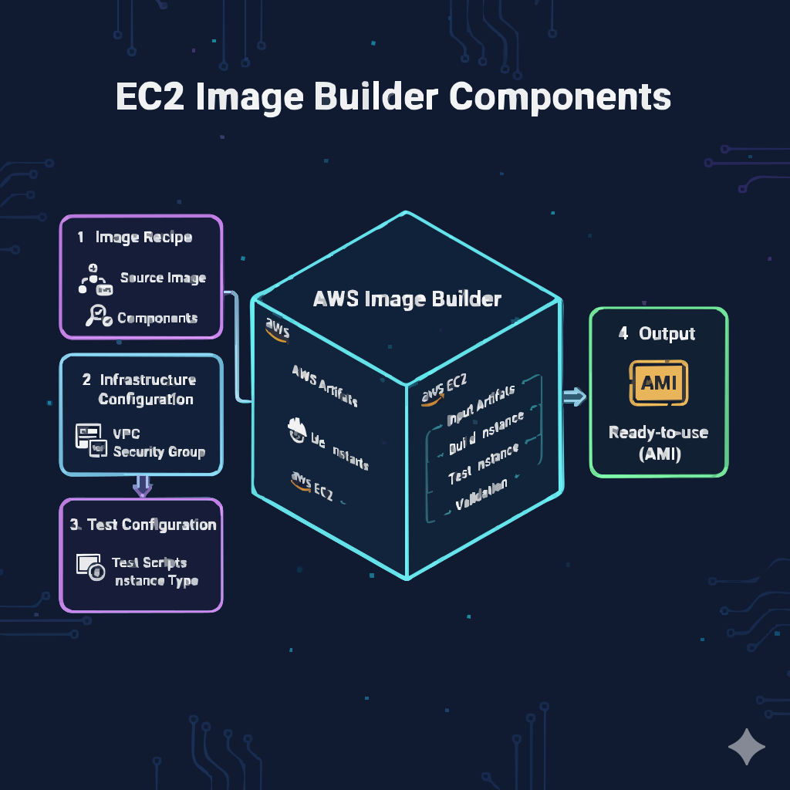
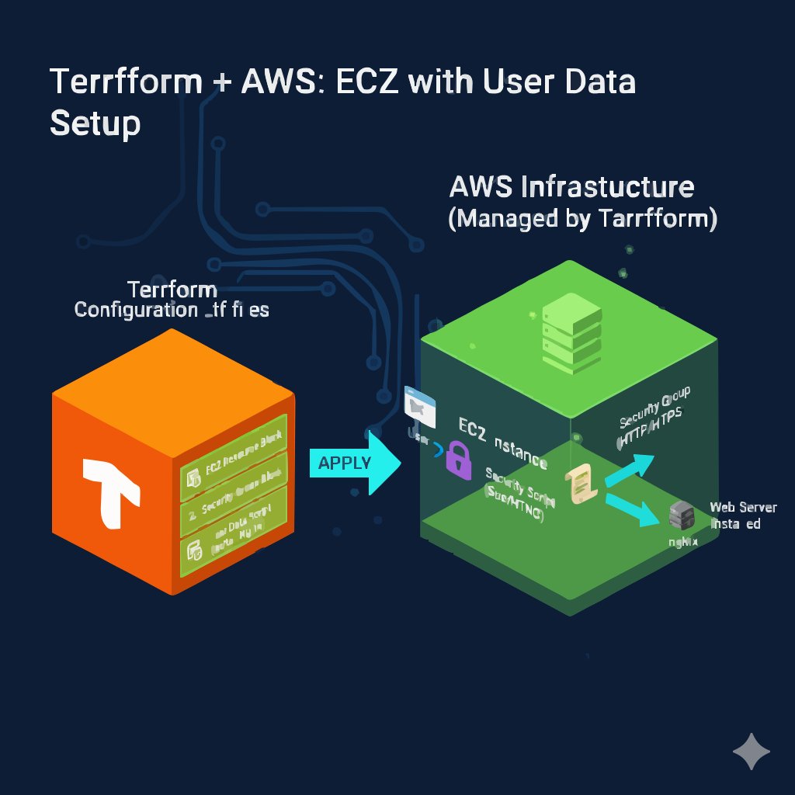
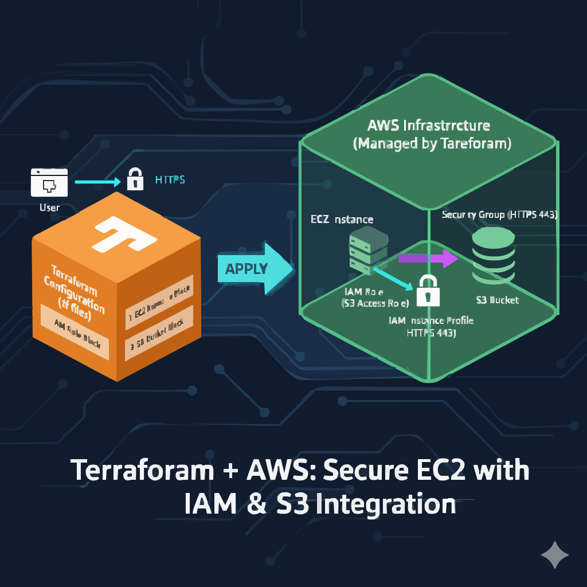
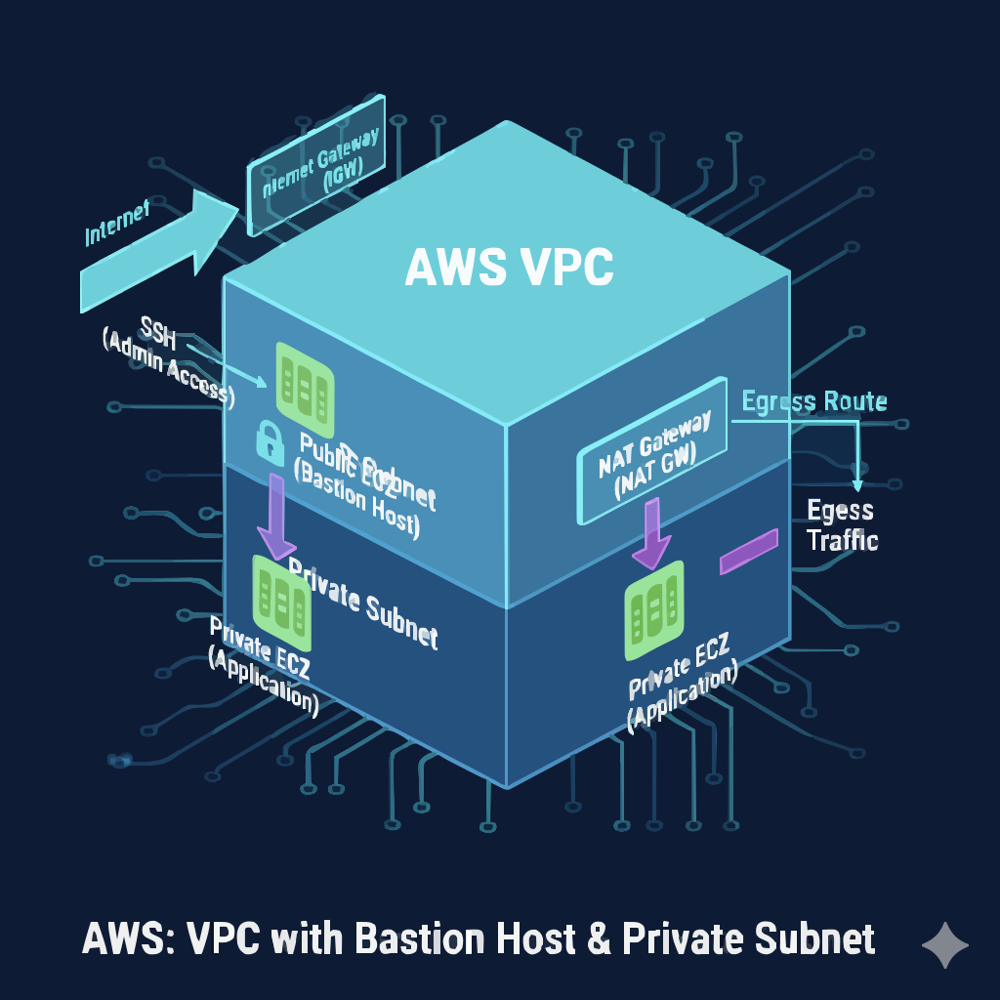
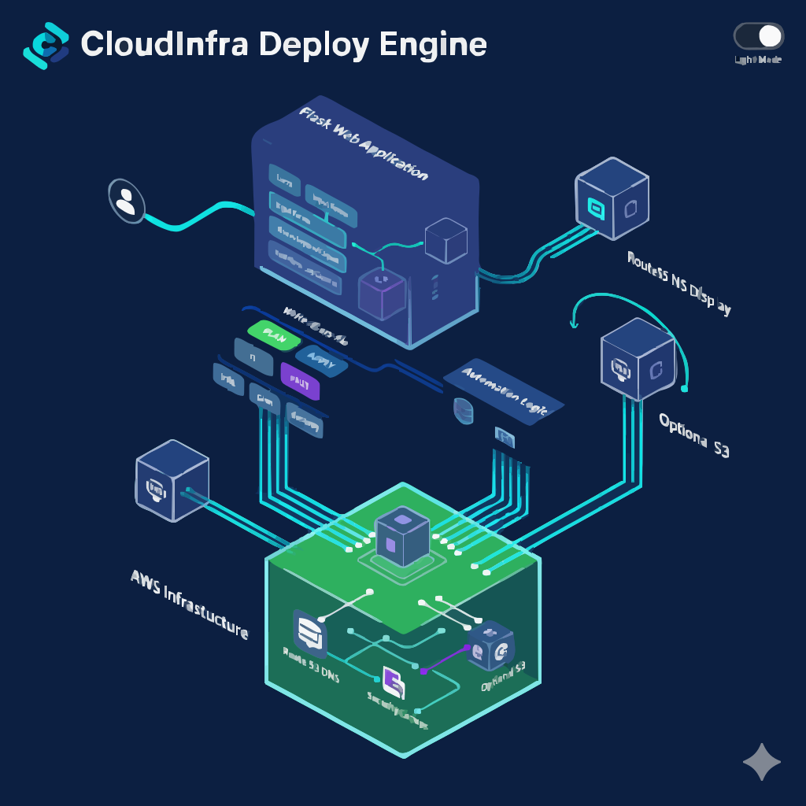

I design, automate, and operate AWS-based infrastructures using Terraform, CI/CD, and DevOps
best practices
to deliver scalable, reliable, and secure platforms.
Visualizing automated AWS infrastructure with VPCs, EC2, ALB, S3, SNS, and Terraform
pipelines (inferred).
About & Skills
I build cloud-native infrastructure on AWS using Infrastructure as Code, automate deployments,
and
connect services like EC2, VPC, S3, ALB, SNS, and Route 53 into reliable architectures.
About Me
I learn Cloud & DevOps by building real-world projects on AWS and Terraform, from basic
EC2 website
hosting to production-ready networking with two-tier VPCs, NAT Gateways, load balancers, and
event-driven
architectures. My work emphasizes automation, reproducibility, and security across the full
lifecycle of
cloud infrastructure. (About tone partially inferred)
I focus on clear, documented workflows: plan ↠ apply ↠ validate ↠ destroy, ensuring
environments are
easy to spin up, test, and tear down to optimize cost and reduce operational risk.
(inferred)
CloudWatch (inferred)CloudTrail (inferred)IAM Roles & PoliciesSecurity Groups
Languages & Tooling
PythonBashHCLYAMLHTMLCSSGit
Infrastructure as Code (Terraform)90% (inferred)
AWS Networking & VPC Design85% (inferred)
CI/CD & Automation80% (inferred)
Projects
A curated set of Cloud and DevOps projects built on AWS, Terraform, and automation workflows —
from single EC2 web servers to two-tier VPC infrastructures and UI-driven Terraform
orchestration.

Basic EC2 Deployment
First portfolio website deployment on AWS EC2 (Amazon Linux) using Apache and GitHub
integration.
This project demonstrates the first step in deploying a portfolio website on AWS
EC2, installing an
Apache web server, and pulling website files directly from GitHub onto the
instance.
Architecture

EC2 instance (Amazon Linux 2) reachable via HTTP and SSH, hosting a static
portfolio site. (inferred)
Tech Stack & Components
Amazon EC2 (t2.micro, Free Tier)
Amazon Linux 2
Apache HTTP Server (httpd)
Security Group allowing HTTP (80) and SSH (22)
Git & GitHub for website code deployment
IaC & Automation
Instance provisioning and configuration are described step by step (via console
and commands).
Future iterations can be migrated to Terraform or EC2 Image Builder for full
automation. (inferred)
CI/CD & Monitoring
Manual Git-based deployment from GitHub to EC2.
(inferred) Can be extended using GitHub Actions to build and sync website
files to EC2.
(inferred) CloudWatch metrics and basic status checks for instance health
and CPU usage.
Security & Cost Optimization
Minimal Security Group rules (HTTP + SSH) to reduce attack surface.
Free-tier eligible t2.micro instance to keep costs low.
(inferred) SSH key–based login with no password authentication.
(inferred) Stop / terminate instance when not in active use.
How I Built It
Using the AWS Console, I launched an EC2 instance, configured the Security
Group, connected via SSH,
installed Apache, and cloned my portfolio website from GitHub into
/var/www/html.
Learnings / Challenges (inferred)
Understanding EC2 networking and Security Group rules.
Mapping Linux file structure to Apache’s document root.
Troubleshooting HTTP access and verifying that the site served correctly
from the public IP.
This project upgrades the basic EC2 deployment into a production-ready
environment using a static
Elastic IP, a custom domain managed via GoDaddy and AWS Route 53, and HTTPS
enforced with Let’s Encrypt.
Architecture

Domain registrar (GoDaddy) delegates DNS to Route 53, which routes traffic
over HTTPS to EC2.
(inferred)
Tech Stack & Components
Elastic IP associated with EC2 instance
GoDaddy domain pointing NS records to Route 53
Route 53 Hosted Zone and A Record for domain → Elastic IP
Let’s Encrypt certificate via certbot for HTTPS
IaC & CI/CD
The deployment is primarily console and CLI-driven, with clear steps to evolve
toward full
Infrastructure as Code and automated pipelines using Terraform and CI/CD tools.
(inferred)
Monitoring & Security
HTTPS ensures encrypted communication between clients and the EC2-hosted
website.
(inferred) CloudWatch alarms can track instance availability and HTTP
response codes.
(inferred) Regular Let’s Encrypt renewals automated via cron jobs.
Outcomes / Metrics (inferred)
Stable, bookmarkable domain instead of changing public IP.
Improved user trust and SEO through HTTPS & SSL/TLS.
Production-style setup ready for further scaling (ASG + ALB).
Learnings / Challenges (inferred)
DNS propagation and troubleshooting NS / A records.
Correctly configuring certbot with Apache on Amazon Linux.
Aligning registrar DNS with AWS Route 53 hosted zones.
This project uses EC2 Image Builder to automate the creation of AMIs with a
pre-installed web
server, ensuring faster and more consistent deployments across environments.
Architecture

Image Builder pipeline provisions a build EC2 instance, applies components,
and outputs a reusable
AMI for downstream use. (inferred)
Tech Stack & Components
Custom Image Builder Component for web server installation
Image Recipe referencing base Amazon Linux AMI and components
Infrastructure Configuration for build host and IAM role
Image Pipeline to orchestrate periodic or manual AMI builds
IaC & Automation
The AMI creation process is fully automated using Image Builder pipelines,
making it easy to roll
out updated images for EC2-based environments. Terraform can orchestrate these
pipelines as part of
a broader IaC approach. (inferred)
Monitoring & Security
(inferred) CloudWatch logs for Image Builder pipeline status and failures.
IAM roles restrict pipeline permissions to the minimum needed.
(inferred) Regular AMI refresh schedule to include latest patches.
Outcomes / Metrics (inferred)
Reduced time-to-provision for new web server instances.
Consistent configuration across all deployed EC2 instances.
Improved reliability through standardized base images.
This project provisions an EC2 instance using Terraform, configures Security
Groups for HTTP access,
and uses user_data to automatically install and start Apache,
hosting a simple HTML page.
Architecture

Terraform defines the EC2 instance and Security Group, exposing HTTP to the
internet while
keeping configuration in version-controlled HCL. (inferred)
Beginner-friendly VPC provisioning with subnets, route tables, and Internet Gateway
using Terraform.
Stack: Terraform, AWS VPC, Subnets, Route Tables, Internet Gateway
Overview
This project automates the creation and teardown of an AWS VPC using Terraform,
showcasing a complete
init → plan → apply → destroy workflow and introducing reusable modules for
networking.
This project automates an EC2 + S3 integration where HTML files are stored in S3
and fetched by an
EC2 instance using an IAM role instead of static credentials, then served
through Apache.
Architecture

S3 bucket holds static HTML; EC2 uses an IAM role to read objects securely
and serve them to users. (inferred)
Key Resources
aws_s3_bucket and aws_s3_bucket_object
aws_iam_role and aws_iam_instance_profile
aws_security_group for HTTP access
aws_instance with Apache installed via user_data
Monitoring & Security (inferred)
IAM role avoids hardcoding AWS credentials.
CloudTrail can track S3 access via the role.
S3 bucket policies can further restrict access to only the EC2 role.
This project provisions two Apache web server EC2 instances behind an
Application Load Balancer,
using target groups and health checks to provide a scalable, fault-tolerant
setup.
CI/CD & Observability (inferred)
Terraform plan/apply manage ALB and EC2 lifecycle.
CloudWatch monitors ALB request metrics and target health.
This project wires S3 bucket events to SNS, sending email notifications each
time an object is
uploaded, fully provisioned and configured via Terraform.
Monitoring & Security (inferred)
S3 → SNS events provide near real-time visibility into uploads.
Policy-secured SNS topic to allow only S3 to publish.
Production-style two-tier VPC with public and private subnets and NAT Gateway for secure
outbound access.
Stack: Terraform, AWS VPC, Subnets, Internet Gateway, NAT Gateway, EC2,
Security Groups, Elastic IP
Overview
This project provisions a custom VPC with a public subnet, a private subnet, a
NAT Gateway for secure
outbound internet from private EC2 instances, and routing that models real
production environments.
Architecture

Public subnet hosts bastion / web EC2; private subnet hosts internal
workloads accessing the
internet via NAT Gateway. (inferred)
Monitoring & Security (inferred)
Private subnet instances have no public IP, reducing exposure.
Security Groups separate public and private traffic.
VPC Flow Logs help analyze allowed/denied traffic.
CloudInfra Deploy Engine is a DevOps-friendly automation console that lets users
drive Terraform
commands via a browser-based dashboard, provisioning and managing AWS
infrastructure through a
guided UI instead of direct CLI usage.
Architecture

Flask app executes Terraform in a controlled environment, surfaces logs to
the UI, and provisions
AWS components such as EC2, Route 53 records, and optional S3 storage.
(inferred)
Tech Stack & Components
Flask backend (app.py) to orchestrate Terraform CLI commands
Terraform configuration (terraform/ with main.tf, variables.tf,
outputs.tf, provider.tf)
UI templates (templates/index.html) with dashboard views
Optional static assets in static/
Route 53 hosted zones and EC2 instances for website deployment
No terraform.tfvars, state files, or AWS keys are committed to
Git.
.gitignore excludes Terraform state, virtualenvs, and secrets.
Least-privilege IAM policies recommended for Terraform execution roles.
How I Built It
I combined a Flask application with Terraform CLI, designing a clean DevOps
dashboard to trigger
init, validate, plan, apply,
and destroy
while streaming output into the browser. I structured the Terraform
configuration under a dedicated
terraform/ directory and added optional CI checks using GitHub
Actions.
Learnings / Challenges (inferred)
Orchestrating long-running Terraform processes from a web server safely.
Handling credentials securely without exposing them to the UI.
Designing a UX that makes complex infrastructure operations understandable
and traceable.
Replace YOUR_USERNAME with your GitHub username as shown in the README.
Case Studies
Selected deep dives into architectures that highlight scalability, reliability, security, and
automation.
CloudInfra Deploy Engine – UI-Driven IaC
Problem
Running Terraform purely from CLI makes it harder for non-expert users and teams to
consistently apply
infrastructure changes and see what’s happening in real time. (inferred)
Approach
Build a Flask-based dashboard that wraps Terraform CLI commands, validates
configuration, and exposes a
guided workflow for init, validate, plan, and
apply.
Architecture
Flask app orchestrating Terraform modules, provisioning AWS resources such as EC2 and
Route 53, with an
import/export configuration panel and optional GitHub Actions CI for format and validate
checks.
Implementation
Designed the project with a clear structure: app.py, Terraform
configuration in a
terraform/ directory, HTML templates under templates/, and a
screenshots
folder to document the UI. The app runs locally and controls Terraform via shell
execution.
Outcomes / Metrics (inferred)
Faster onboarding for team members who can deploy infra from a UI, fewer manual CLI
mistakes, and a
reusable platform for future extensions like ASG, ALB, CloudFront, and WAF integration.
Two-Tier AWS VPC with NAT Gateway
Problem
Many workloads require private subnets without direct internet exposure but still need
outbound access
for updates, package downloads, and external APIs. (inferred)
Approach
Use Terraform to build a VPC with clearly separated public and private subnets, an
Internet Gateway for
the public tier, and a NAT Gateway plus routing for secure outbound access from the
private tier.
Architecture
Custom VPC, public subnet hosting an EC2 instance with public and private IP, private
subnet hosting
internal EC2 instances, NAT Gateway with EIP, and independent route tables for each
tier.
Implementation
Implemented Terraform resources for VPC, subnets, route tables and associations,
Internet Gateway,
NAT Gateway, Elastic IP, EC2 instances, and Security Groups. Outputs expose key
identifiers for use in
downstream modules or stacks.
Outcomes / Metrics (inferred)
A reusable two-tier networking pattern ready for application stacks, with reduced attack
surface,
production-style routing, and predictable infrastructure lifecycle managed fully via
Terraform.
Automated AMI Creation with EC2 Image Builder
Problem
Manually configuring EC2 instances after launch increases deployment time and introduces
configuration drift. (inferred)
Approach
Use EC2 Image Builder to define components, image recipes, infrastructure configuration,
and a pipeline
that outputs standardized AMIs with pre-installed web servers.
Architecture
Image Builder pipeline provisions a temporary build instance, applies custom components
for web server
configuration, validates the result, and publishes an AMI that can be used across
multiple deployments.
Implementation
Created custom components, recipes, and pipeline definitions in AWS, along with IAM
roles to securely
access required resources. Validated resulting AMIs by launching them and confirming the
web server
state.
Outcomes / Metrics (inferred)
Decreased configuration time for new instances, standardized base images, and a clear
path to scheduled
AMI refreshes integrated with CI/CD pipelines.
Contact
Interested in Cloud / DevOps roles, platform engineering, or infrastructure automation?
Let’s connect.